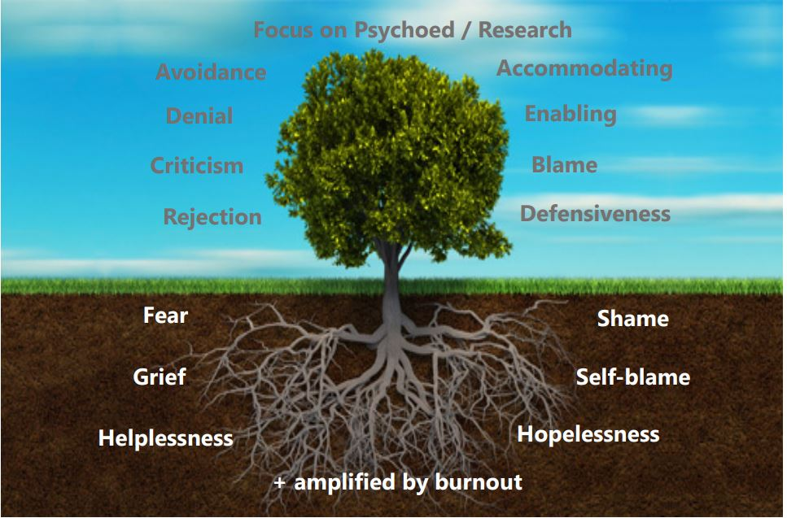

Overview
In this unit we will spend some time discussing a subject that we tend to avoid; death accompanied by grieving. Grieving can be challenging in a culture that often ignores loss and avoids discussing its impact, as H. Norman Wright points out at the start of his book, which you’ll have the opportunity to read later in this unit. “When we add this silence to the fact that most of us have never been taught about the process and normalcy of grief and death, no wonder we struggle” (p. 1).
Our fear and pain surrounding death are intensified by the uncertainty it brings, raising questions that lack definitive answers. For those with faith, this belief can provide some comfort—a sense of peace about what comes after death. However, this comfort does not eliminate the pain of losing a loved one, the suffering that may precede death, or the lingering questions and anxieties that often accompany it. As we’ve discussed in earlier units, the experience of suffering and pain is something we naturally strive to avoid at all costs.
As with the previous unit, this one also deals with trauma. In the same way that death can cause trauma to the body, it can cause suffering to the brain of those who are left behind as well. This unit will not go into detail about how the brain is affected, but keep in mind what you learned from the first unit about trauma and the brain.
Topics
This unit is divided into the following topics:
- Identify some of the major researchers in the area of Grief and Loss
- Examine the societal and cultural view of death and dying and how it affects the individual
- Identify one’s own relationship to death and interact with it
- Conceive of a scenario where someone is experiencing grief and loss
- Practice the skill of validation as outlined in EFFT
- Develop a preliminary treatment plan and know where to find resources and further specialized training
Unit Learning Outcomes
When you have completed this unit, you will be able to:
- Identify and discuss some of the major authors in the field of addiction
- Interpret the phrase, “Not why the addiction, but why the pain?”
- Conceptualize an addictions case
- Practice the skill of validation as outlined in EFFT
- Develop a preliminary treatment plan and know where to find resources and further specialized training
Learning Activities
Here is a list of learning activities that will benefit you in completing this unit. You may find it useful for planning your work.
- Watch: What is grief?
- Watch: Kubler-Ross’ 5 Stages of Grief
- Read: ‘Experiencing Grief’ by H. Norman Wright
- Explore: Additional resources
- Read: A Personal Journey through the Grief and Healing Process
- Read: “Being Mortal’ Chapter 1: The Independent Self
- Read: “Being Mortal’ Chapter 2
- Research: Complicated Grief
- Read: Generating a Vocabulary of Mourning: Supporting Families Through the Process of Grief
- Review: EFFT Chapters 1-2, READ chapter 5
- Read: “Walking with God through Pain and Suffering” by Timothy Keller
Working through course activities will help you to meet the learning outcomes and successfully complete your assessments.
Assessment
Please see the Assessment section in Moodle for assignment details.
Resources
Here are the resources you will need to complete this unit.
- Other online resources will be provided in the unit.
What is Grief?
When a person endures a loss, they will inevitably experience grief. At some point in our lives, we all face grief. The nature of the loss shapes an individual’s grieving experience. Loss can occur in many forms: the death of a loved one, the end of a meaningful relationship, losing a job, facing a disability, or enduring the illness of a loved one. Whether the grief stems from a loved one’s passing or a terminal diagnosis, it is a powerful, sometimes overwhelming emotion. Grief can leave a person feeling numb or disconnected from daily life. To better cope with grief at various stages, experts recommend learning about the grieving process. Understanding the underlying causes of significant emotions, such as guilt over a loss, can help in navigating them.
Activity: Watch | What is grief?
Julia Samuel talks about what grieving is and what the process is like. Note that she brings up a similar concept to what we read about in previous units: it’s not so much the event surrounding the death, but having to go through the process on our own without community.
What is it like to be a dying patient? An older video by Elisabeth Kubler-Ross explains what matters most in the end and what it is like to die.
What Dying looks like: Katherine Mannix explains what the signs we see towards the end of life actually mean. It is really important for you to understand this for your own experience of death, as well as when you are interacting with clients to provide them with some psychoeducation.
Activity: Watch | Kubler-Ross’ 5 Stages of Grief
One of the first models in this field was the 5 stages of grief, which we will cover in this section. It is important to acknowledge and learn from our past, even if not everyone uses this model.
Please watch Elisabeth Kubler Ross’ Five Stages of Grief. She was a major influence on how hospice care is structured today. Prior to watching this clip, it is important to note that the model was developed for dying patients, not for those who are left behind/the mourners. It may be more appropriate to apply this model to clients who are dying rather than those who are grieving.
I also invite you to read the following excerpts from Kubler-Ross’ book “On Death and Dying”. This part of the activity is OPTIONAL
- p. 37-53, 76-86, 105-117, 132
TWU has purchased an online version for our use and it can be accessed here:
Students can access the full text via the EPUB Full Text link on the left. They are able to download up to 25 pages of the book content
Questions to Consider
- Why is partial denial considered healthy?
- When should a dialogue about death take place?
- Why is anger a hard stage to deal with?
- Why does it happen?
- What does bargaining attempt to do?
- What might the promises or bargaining be associated with?
- What are the two different types of depression outlined?
- Why is it not helpful to reassure or tell the sad, dying person to be happy or not be sad?
- What feelings are present at the acceptance stage?
- Who needs the most help during this stage?
Activity: Optional Read | ‘Experiencing Grief’ by H. Norman Wright
In order to complete this optional reading, you will need to purchase the book, “Experiencing Grief” by N.T. Wright. This is not a required text, however the read may be valuable to you if you are interested in working in the area of grief or if you have experienced grief yourself. Again, this is an optional read and the text does not have to be purchased, nor does the reading have to be completed.
Wright describes grief from what seems to me like an inner monologue of his own experiences and wrestlings mixed in with his readings. There are some good descriptions and metaphors in here that may help you connect to the information in a different way. This is also an opportunity to read this little book and decide whether or not you feel like this would be a good resource to pass on. As Timothy Keller talks about in his book “Walking with God through Pain and Suffering,” each person’s experience of grief is so unique that we have to keep in mind that what may work for one person, may not work for another and in fact can even have the potential to make it worse. However, this does not imply that you should not pass on resources, but rather that you should be very careful about who and why you pass on resources.
In contrast to our previous readings from Elisabeth Kubler Ross, this one focuses on grieving from the perspective of a bereaved individual.
Questions to Consider
1.Why is the imagery that grief is like waves of an ocean so applicable? 2.What are the multitude of emotions involved in the grief process? 3.What types of losses tend not to be understood or acknowledged? 4.Why is it important to cry? 5.What puts you at risk for complicated grieving? 6.What are the four signs of recovery? How long would it typically take to appear?
A Moment of Reflection
What role does grief, loss, and death play in your life? In your church life?
I wonder sometimes if we use the Bible and God’s teachings to invalidate the suffering of those around us. Like what we are learning in EFFT with the BUT statements. “Yah it makes sense that you are suffering, but God will redeem this experience, But God tells us not to worry, but…”
Think about Easter, Jesus dying, suffering an excruciating death on the cross. If we don’t allow ourselves to feel this, we will never fully get the depth of the Father’s love for us. When we avoid grief, or try to have it pass by quickly, we miss out on the ability to connect on a deeper level with ourselves, with creation, with others and most importantly with God.
Activity: Websites exploration
Please browse the following two websites for additional resources, training and information on grief, both for those who are dying and for those who are grieving.
How does grief/loss and death affect us?
Grief can cause emotional or physical symptoms in a person. In the early stages of grief, almost anything that people experience is normal, such as feeling extremely overwhelmed, questioning religious or spiritual beliefs, feeling mad, feeling upset or resentful. It is possible to mourn for months or years. As time passes and as the bereaved adjust to life without a loved one, to the news of a terminal diagnosis or to the possibility of losing someone they love, pain usually becomes more manageable.
The purpose of this section is to discuss how grief/loss and death affect us. ‘Being Mortal’ is an outstanding book that I strongly recommend you read in its entirety to gain a clear understanding of the broader system at work and how it influences the individual’s process. Additionally, we will read an article that provides three ways to explain how grief and loss affect us, both from the perspective of the dying and from the perspective of the mourner. In order to conclude this topic, we will examine the ICG scale. There will be references to Complex Grief in our readings, but we will not go into specifics due to the limited time we have together.
Activity: Read | A Personal Journey through the Grief and Healing Process
Blevins, S. (2008). A Personal Journey through the Grief and Healing Process with Virginia Satir, Dr. E. Kubler-Ross, and J. William Worden. Satir Journal, 2(2), 89–105.
As you read this article, you will have the opportunity to gain an understanding of how grief/loss and death affect us from the point of view of three main clinicians/researchers in this field. There is an online version of this article available through TWU’s library.
A Personal Journey through the Grief and Healing Process
Questions to Consider
- What are the 6 stages of change that Satir has developed? What is the added stage?
- What does the stage of chaos do? What does it have the potential to do as a lasting outcome?
- How does the author apply these 6 stages, specifically the chaos stage to dealing with a death/loss?
- What are Kubler-Ross’ 5 stages?
- What are Worden’s four tasks?
- Which models does the author combine together to describe the process for the dying and then to describe the process for the grieving?
- What was the hardest stage for the author?
- What does the process of change do?
Activity: Read | “Being Mortal’ Chapter 1: The Independent Self
Atul Gwande’s book “Being Mortal” is a great resource for you to examine how our views of the elderly have shifted in our culture, starting with the first chapter. It is my hope that you will come back to this reading when you have the time, as the entire book presents important viewpoints on the topic.
Death/dying is not explicitly discussed in Chapter 1, but how we view the elderly is important as our avoidance of interacting with elderly people and thinking about this stage of our lives is arguably a result of avoiding thinking about our own deaths.
Questions to Consider
- How does the way contemporary society treat their elderly compare to how the elderly are treated in most of human history?
- What are the 8 “Activities of Daily Living” and the 8 “Independent Activities of Daily Living?”
- How does new technology change the way we treat our elderly?
- Describe the shift from elderly living/needing to live with family to the creation of the ‘retirement’ phase.
- Finish the following quote, “Modernization did not demote the elderly. It demoted the _________” p.22
- What has the veneration of elders been replaced with?
Activity: Read | “Being Mortal’ Chapter 2
The purpose of this chapter is to describe the various trajectories our lives can take and what will occur to our bodies in these scenarios. Furthermore, this chapter explores the priorities we have in our culture, in particular those related to dying and aging, and how, despite the fact that there are ways to be properly supported in our elder years, we do not prioritize it enough to bring about this change. This chapter is important for us to read as I am hoping it stimulates some thoughts about how we deal with the elderly and ultimately with death; how our avoidance of talking about aging and death may be preventing us from receiving the appropriate care at this time of our lives.
Becoming more comfortable with talking about death is not only beneficial for us psychologically, but also biologically. In order to contribute to the continuing of this conversation, Atul Gwande’s book is a worthwhile and necessary read. I urge all of you to read the remainder of it when you have the time.
Questions to Consider
- Why is it that even though a diagnosis can be present for a long time, death can still come as a surprise?
- What two revolutions have the advances of modern medicine given us?
- Why is studying aging, studying an unnatural process?
- What is the condition known as frailty?
- Why did the doctor say you must always examine the feet of an elderly person?
- What did the University of Minnesota study? Why was the center shut down?
Activity: Complicated Grief
Please search in your browser and review the ICG (Inventory of Complicated Grief). It is recommended that you take the ICG for the experience; however, if you have recently suffered a loss and this activity would trigger too many emotions for you, please feel free to skip it. There is research out there to be read about complicated grief, how it develops and what treatment to use with it, however it will be too much for our unit today to go over it. I encourage you to recall, instead, your readings by H. Norman Wright on “Experiencing Grief” as he writes a little bit about complicated grief towards the end of his book.
The score is out of 76 for the ICG and a score of 25 or greater is a person at high risk for requiring clinical care.
Recommended Resource
Mary Frances O’Connor has done a lot of research in the field of grief, relating it to biology. If you are interested in reading some of her articles, and specifically her articles on complicated grief, I will provide her website for you to peruse. This is added reading however, and does not need to be completed for this unit.
maryfrancesoconnor.com
How do We Work with It?
Recent research suggests that grief does not necessarily follow the linear, predictable stages once widely accepted. However, it remains broadly understood that grief is a process aimed at recovering meaning after a loss (Brown, 2021). The risk factors for complicated grief are diverse, including depression, anxiety, poor physical health, attachment issues, low perceived social support, family conflict near the end of life, and difficulty accepting death. Understanding these factors can help guide the appropriate support needed.
There is no doubt that there is a great deal of information available regarding grief management. We will be spending most of our time in this section gaining a greater understanding of EFFT.
During this topic you will have the opportunity to increase your knowledge on how to work with grief. You have read in previous sections about some suggested models to work with grief. Grief can also be approached and modelled in many other ways. In preparation for your Oral Presentation, you will have the opportunity to research some treatment models.
Brown, B. (2021). Atlas of the heart. Vermilion.
Activity: Read | Generating a Vocabulary of Mourning: Supporting Families Through the Process of Grief
As a result of the premise that bereavement practices can help mitigate the chances of complex grief developing, the following article explores a variety of mourning practices. As well, it is argued that clinicians should receive training in mourning and bereavement practices in order to assist in the treatment of their patients. Additionally, this article emphasizes the importance of understanding the broader system, but also taking into account the unique needs of the individual within the system.
Generating a Vocabulary of Mourning: Supporting Families Through the Process of Grief
Questions to Consider
- What is a preventative factor for the development of complex grief?
- What do bereavement practices intend to do?
- What are the common themes across religious practices that Goodwyn has developed?
- What is the role of the counselor?
- What are the two considerations highlighted for further research?
Activity: Review | EFFT Chapters 1-2, READ chapter 5
In this section, we will revisit how EFFT can be applied in our work with grief, loss, and death. EFFT, along with the ability to validate emotions, offers a way to express those unspeakable moments by providing language and bridging the gap between the prefrontal cortex and the limbic system. The goal of this exercise is to learn how to guide emotional experiences even when words are unavailable. The use of EFFT aligns well with the ideas presented in the preceding article, as the author emphasizes that every individual’s grieving process is unique, influenced by various factors. Therefore, effective validation skills will be crucial throughout this journey.
In addition, we will spend some time today discussing death and dying. This is a topic that we tend to avoid discussing- the reasons varying from individual to individual. This is referred to as working through blocks. Today, we will conduct a personal exercise related to this topic.
Questions to Consider
- What are three things conditioned responses are based on?
- Describe what a block is.
- What is block work?
- What is the main paralyzing emotion that fuels blocks in caregivers?
- When is caregiver resentment most likely to surface?
- Describe what the authors mean by the ‘wisdom’ in the blocks? What does it help us do?
- What is the tree metaphor?
- Name some of the self-assessment tools.
- What is the benefit of ’speaking into the void?
- What are some other techniques they list that can regulate emotions in a caregiver?
Exercise: Block Work
As we work through a block, we will focus on the psychoeducational component. In spite of the fact that you have read about how you can work with caregivers to work with blocks, I would like you to take the opportunity to apply it to yourself at this time, especially with regard to the subject of death. As we have discussed in this unit, death and loss are topics that tend to be avoided in our culture, but research shows that those who are dying, those who are grieving, need to talk about it. Having stated this before, I would argue that it is for this reason that we do not have the proper systems in place in North America to provide assistance, honor, and support to the elderly. Atul Gwande stated in our reading above that we have come to venerate independence above all else. In order to avoid experiencing pain in those vulnerable places, we avoid going there.
 (2019. International Institute for EFFT)
- When I hear/talk/think about death OR When I interact with/think about the elderly…
- I feel (emotions-roots):
- and therefore I react with (pattern-branches)
After you identify the block and validate for yourself why it is present, I encourage you to implement the premise behind the relationship dimensions scale which is to do the exact opposite of what you normally do. For example, if you never talk about death, seek out someone you trust to have that conversation with. If you have someone in your life that is elderly, like a grandparent or a parent and you never ask them about how they are doing with their deteriorating bodies or if they think about the end, maybe open up that conversation.
Exercise: Validation of Silence p. 169-170
We read briefly about the validation of silence in our chapter on caregiver blocks. The exercise is normally performed with a loved one who does not respond to a bid for connection; ‘speaking into the void’. I would like you to apply the same format and premise to someone who feels ‘blocked’ about speaking about death and dying.
Imagine after trying to engage in a discussion/response, you receive no answer/silence. How would you validate them? Their fears? their block to talking about this with you? You can use the guide at the back of the book on pages 169-170 to help you format your response. I encourage you to write it out.
An alternative to writing out a validation of silence for someone else could be for you to write a validation to yourself about your own silence on the subject. You can use the exercise that you did with the tree metaphor to help guide your response.
Activity: Optional Reading | “Walking with God through Pain and Suffering” by Timothy Keller
The book written by Timothy Keller is an excellent resource for those interested in learning more about theology of suffering and pain. The only section that pertains to our topic today will be read. Despite the fact that he is primarily discussing pain and suffering, his words are applicable to our discussion on grief, loss, and death, as they are also engulfed in worlds of pain and suffering.
Please read Chapter 11 which you can find here. Timothy Keller Ch.11
Questions to Consider
- What is the main metaphor describing how to experience pain and suffering and what is the idea behind it?
- What is the difference between being in the fire versus having the fire within yourself?
- What is the metaphor of the mixed gold?
- What is the paradoxical balance of confidence and humility in the response of Shadrach, Meschach and Abednego?
- We have been exploring how experiencing pain, loss, death, and suffering change you and open us up to access a deeper place within, how does Tim Keller expand on this discussion?
- How does Tim Keller frame ‘the furnace’? How does he recommend viewing being in the furnace?
By inviting you to read this chapter, I hope to initiate a discussion regarding how God views our pain, our suffering, and our losses. The presence of death is accompanied by the presence of pain. The following are three ‘takeaways’ from this chapter:
- When suffering, pain, death and loss are present, God uses these experiences to deepen us, to draw us closer to Him and to shape us in the process.
- When we are in the depths of despair and we cry out to God, our call is not to simply believe enough and then God will answer our prayers. Our call is to put our trust primarily in God and His wisdom and not our own. There is a surrender in this process which is extremely hard to do. Going through the stages of grief or taking time to work on oneself may need to occur before this can happen.
- Jesus was thrown in the ultimate fire for you and experienced this process completely on His own. In knowing this, can you trust him with your small fires?
Read Chapter 12: Weeping We can apply the concepts from this chapter to all of our units so far as well as our units to come. As scripture tells us, there is a time for everything; a time for weeping and despair is included in this and Tim Keller expands on the importance of weeping for healthy emotional development as well as a means for drawing us closer to God.
Please Read Chapter 12: Weeping which you can find here. Timothy Keller Ch.12
Questions to Consider
- Why did Christians feel the need to eliminate lamenting?
- How did God respond to Elijah during his time of suffering? Who did God send?
- What does creating a climate of care do?
- What are the three lessons that the psalms teach us?
- How does weeping drive us into joy? How can we experience seemingly paradoxical emotions at the same time?
Summary
You have been able to learn about grief and dying from both the perspective of the dying as well as the perspective of those left behind during this third unit. Upon completion of this unit, you will hopefully have a better understanding of how to begin interacting with death, the systemic view of death, dying, and the elderly, as well as the importance of confronting our own fears and hesitations concerning death before we are able to assist our clients. Being the conversation starters of death also places us in a position to be an instrument of change. Creating more of a comfort and vocabulary around death, grieving and loss on a societal level will create huge change on the systemic level. We can be a part of this movement.
Before you move on to the next unit, you may want to check that you are able to:
- Identify and discuss some of the major authors in the field of addiction
- Interpret the phrase, “Not why the addiction, but why the pain?”
- Conceptualize an addictions case
- Practice the skill of validation as outlined in EFFT
- Develop a preliminary treatment plan and know where to find resources and further specialized training
Unit 3 Resources
Topic 1: What is Grief?
Videos
Readings
Kübler-Ross Elisabeth. (2002). On death and dying ; questions and answers on death and dying ; on Life after death. Quality Paperback Book Club. (PDF provided)
Wright, H. N. (2004). Experiencing grief. Broadman & Holman.
Websites
Topic 2: How Does Grief/Loss and Death Affect Us?
Videos
- There are no recommended videos for Topic 2.
Readings
Blevins, S. (2008). A Personal Journey through the Grief and Healing Process with Virginia Satir, Dr. E. Kubler-Ross, and J. William Worden. Satir Journal, 2(2), 89–105.
Gawande, A. (2017). Being mortal: Medicine and what matters in the end. Large Print Press, a part of Gale, Cengage Learning. (PDF provided)
Websites
Topic 3: How Do We Work With It?
Videos
Readings
Websites
{kind=link}